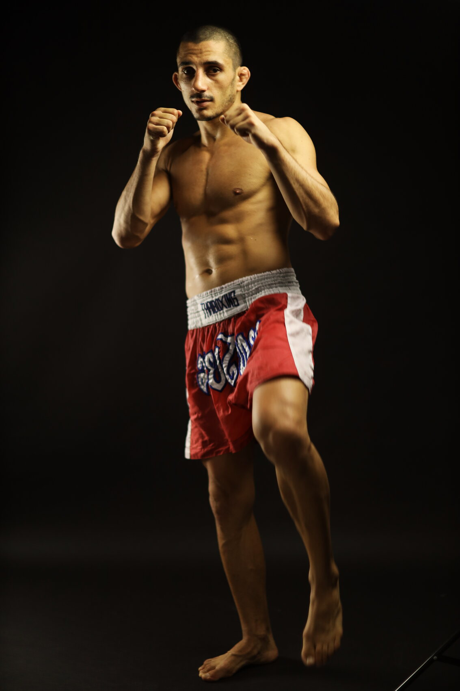

Anatomy Of A Complete Fighter
A close look at what it takes to become a complete flyweight, a fighter who can finish a bout on his feet or grappling on the canvas.

What a complete fighter really is
In the lighter divisions nobody gets to coast. Flyweights move fast, scramble hard and give each other almost no room to breathe. A fighter who is only a striker gets taken down and controlled. A fighter who is only a grappler gets picked apart before he can close the distance. The word that separates the good from the dangerous at this weight is complete, and it is far harder to earn than it sounds. A complete fighter can begin a finish on the feet and end it on the canvas, or take an opponent to the mat and submit them before the round is out.
Sotir Kichukov, known in the cage as The Trouble, is a clean example of what that looks like when it is built properly. Born in the Black Sea town of Pomorie, he started training in 2006 and never allowed himself to become one dimensional. He turned professional in 2009 and, by his own framing, has now shared the cage in 31 professional fights across three continents, from Bulgaria to Asia to Australia.
Striking with a real base underneath it
Good striking in mixed martial arts is not a handful of flashy combinations. It is timing, distance and the confidence to throw when it counts. Sotir built his from the ground up in kickboxing, becoming a Bulgarian champion in 2008 at what was reportedly only his second competition. Add sharp boxing and confident clinch work, and the picture becomes a striker who can trade at range and still hurt an opponent up close.
His own record leans heavily on that stand up game, and it shows in how he teaches it: footwork before power, defence before offence, and the patience to set a shot up rather than simply swing for it.
Wrestling and the clinch that ties it together
Most flyweight fights are decided in the grey area between striking and grappling, and that is exactly where wrestling and the clinch earn their keep. The ability to change levels, finish a takedown, or stuff one and return to the feet is what lets a striker keep striking on his own terms. Sotir treats the clinch as a bridge rather than a resting place, a way to move a fight from one phase into the next without ever surrendering control.
Submissions and the finish on the mat
A ground game is not only defence. Sotir made his professional debut at Max Fight 7 and won it by submission in the first round, and submission victories have followed him across Max Fight, WFCA and ONE Championship. In ONE he competed at flyweight against opponents including Ma Hao Bin and Danny Kingad, plus a catchweight bout with Mark Striegl. Wherever the fight travels, the intention stays the same: keep enough threat on the ground that an opponent can never fully commit to defending the strikes.
Cardio and being ready on short notice
None of this matters if the tank runs dry. Complete fighters carry the conditioning to let their skill survive into the later rounds, and they stay in a state of readiness so a bout on short notice never catches them cold. Readiness is one of the values Sotir returns to most often, the belief that a professional is always prepared rather than scrambling at the last moment to get ready. Years spent competing and coaching, including a long stretch at Saigon Sports Club in Ho Chi Minh City, taught him exactly what a truly conditioned fighter looks like.
Where to learn it in Melbourne
Sotir now lives and coaches in Melbourne, leading classes at Immersion Mixed Martial Arts and running his own practice, CPT, short for Combat and Performance Training. He states he holds the highest record of any flyweight in Australia and New Zealand on the Tapology rankings, and he brings that same standard to the people he trains, whether they are fighters, athletes or working professionals who simply want to move well and think clearly under pressure.
The building blocks are the same for everyone: striking, wrestling, grappling and the conditioning that holds it all together. If you want to see how the pieces fit, his evening classes, including a 6pm session, and his trial sessions are the place to start.